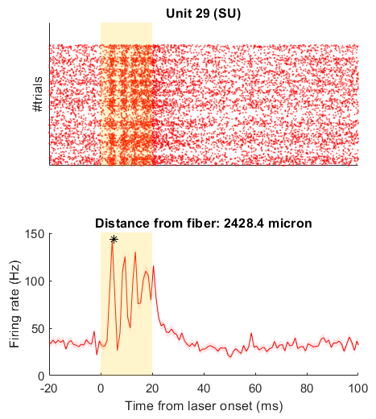
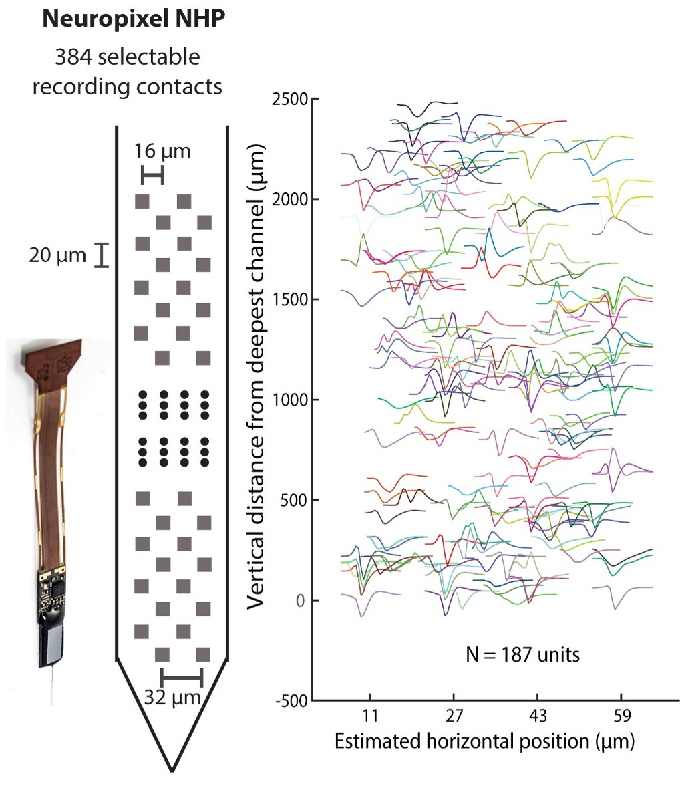
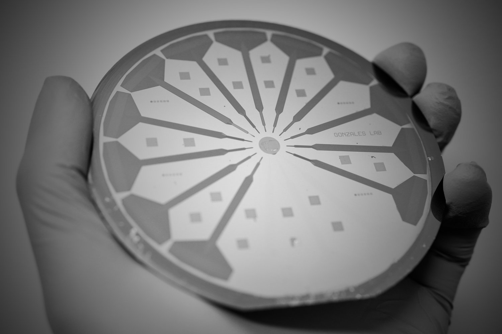

Research
In our lab, we investigate how neuronal activity in the cerebral cortex gives rise to cognitive functions, with a particular emphasis on working memory. I am involved in designing and conducting electrophysiological and imaging experiments using non-human primate models. We use advanced techniques like laminar probe recordings and optogenetic manipulation to precisely target and monitor neural circuits.
My current research focuses on the optogenetic activation and inhibition of prefrontal cortical neurons, especially interneurons, to investigate their role in the canonical circuit for memory retention. I use a wide range of neural data analysis techniques, including single-neuron analysis, population-level decoding, and local field potential (LFP) analysis. Additionally, I employ various statistical methods and image analysis to uncover the intricate dynamics of brain activity.
Previously, I worked on developing machine learning models for decoding mental states and motor imagery tasks from electroencephalography (EEG) signals. This experience strengthened my skills in signal processing, feature extraction, and real-time classification algorithms, giving me a solid foundation in applying computational tools to neural data.
Looking ahead, I am passionate about transitioning into the field of translational neural engineering. I am especially interested in contributing to the development of Brain-Computer Interfaces (BCIs) and other neurotechnology solutions where I can apply my expertise in neural signal analysis, experimental design, and algorithm development to create impactful technologies for restoring and enhancing human function.
Projects
Here I list some of my recent projects:
Optotagging SST interneurons
In this ongoing project, I optically tag Somatostatin (SST) interneurons in the prefrontal cortex of macaque brain. My aim is to study their functional roles in local circuit that contorls working memory by both tagging and stimulating them in live monkeys. When completed, this will provide tremondous insights about the cellular-level computations (for the first time in a non-human primate model).
Asynchronous state of working memory maintenance
We explored how the brain holds information in working memory and found that the prefrontal cortex maintains memory through an asynchronous, distributed pattern of persistent neural firing. Read the paper here.
Flexible, transparent microelectrode arrays for recording in nonhuman primates
In collaboration with Gonzales Lab, we are working on making next generation flexible probes for large animal models (macaque monkeys). Currently we are working on acute recording set up with the aim of creating fully chronic probes in future. Read the preprint here. We also aim to make flexible optrode for optogenetics experiments.
Multisensory integration in dorsolateral prefrontal cortex
Our results demonstrate that dorsolateral prefrontal neurons integrate auditory and visual motion signals, extending multisensory computations beyond sensory cortices into prefrontal circuits that support higher-order cognition. Read the paper here.
Narrow and broad-spiking neurons in working memory
We analyzed the contributions of putative narrow and broad spiking neurons in maintaining working memory indentified from the extra-cellular waveforms across brain regions and tasks. Read the paper here.
Single-neuron and population measures of neuronal activity
We compared traditional single-neuron measures with more-recent population measures and found how population techniques provide us richer insights. Read the paper here.